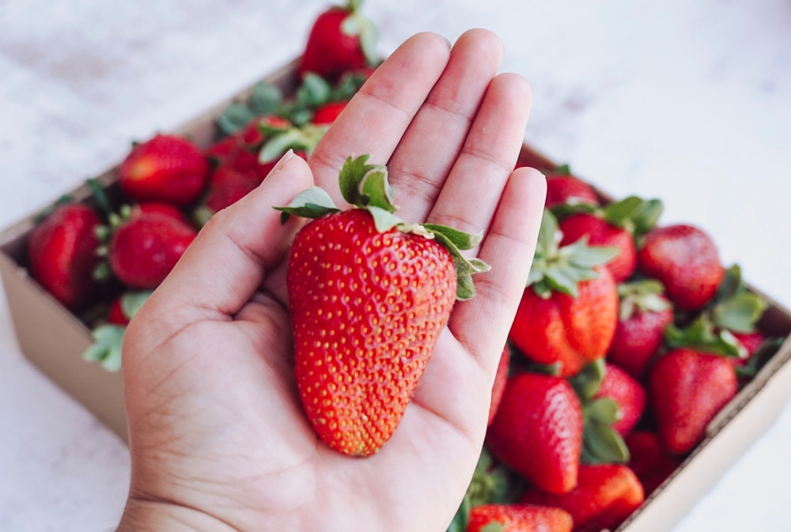
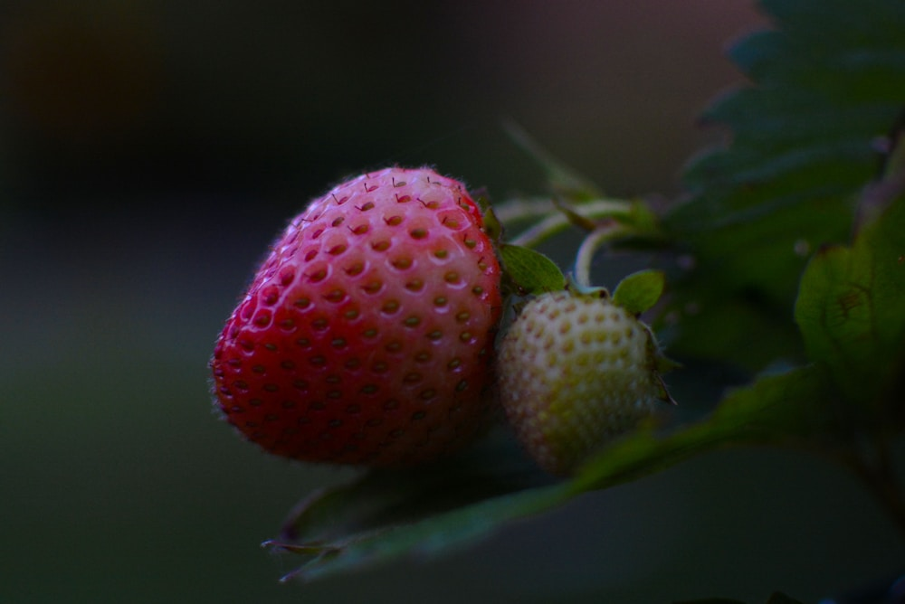
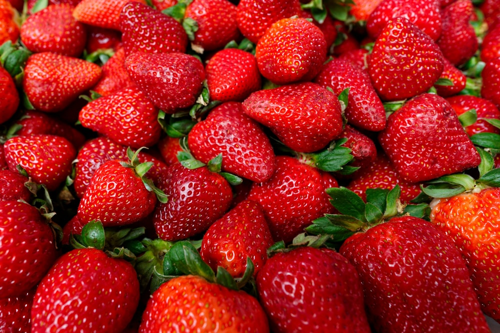
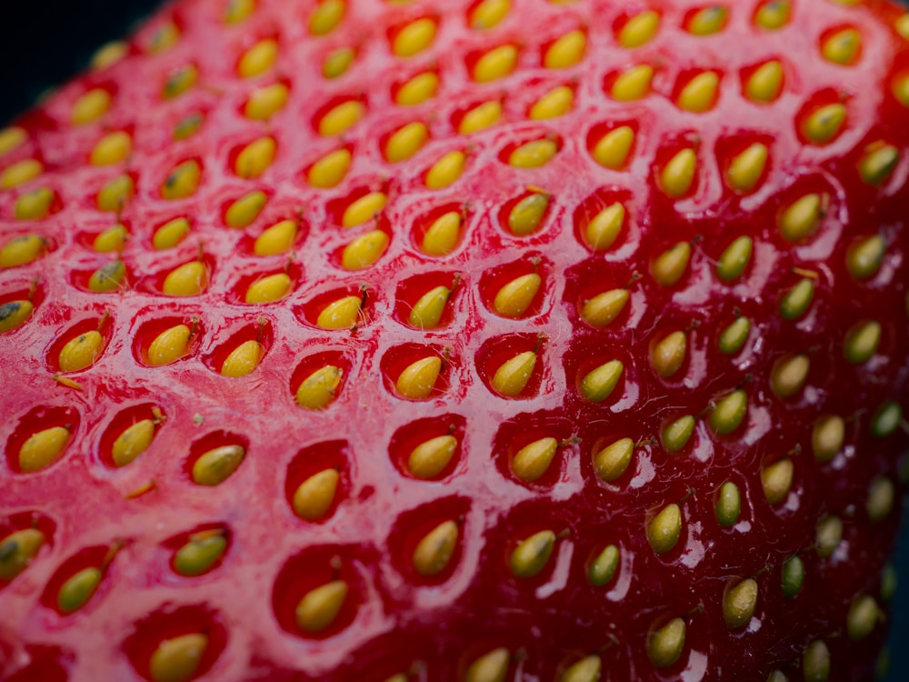

A Guide to Japanese Strawberry Varieties
Amaou, Tochiotome, Beni Hoppe, Skyberry and rare white strawberries — how Japan's best-loved varieties differ in flavour and appearance.
Read more →Guides, seasonal notes, and stories about Japanese strawberries — how to choose them, keep them fresh, and enjoy them at their best.

Amaou, Tochiotome, Beni Hoppe, Skyberry and rare white strawberries — how Japan's best-loved varieties differ in flavour and appearance.
Read more →
Japan's strawberry peak lands in winter, not summer. Here's why greenhouse growing and food culture make the cool months the sweet spot.
Read more →
Refrigerate them, keep them dry, and don't wash until eating — the simple habits that keep strawberries firm and sweet for longer.
Read more →
Labour-intensive hand cultivation, careful grading, flavour-first breeding and Japan's fruit-gifting culture — what sits behind the price.
Read more →